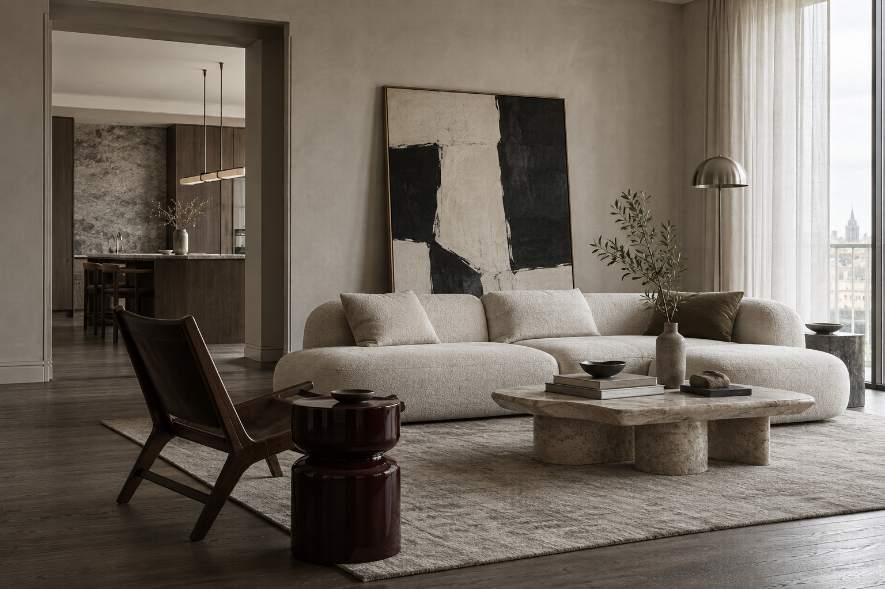

Квартира · 86 м²
Смотреть проект Тихий центр
Общая зона для встреч и тихая спальня, соединённые одним языком материалов.

Проект «Тихий центр»Жилые пространства
Четыре дома, четыре разных сценария жизни.
Каждый показан как авторский концепт.
Общая зона для встреч и тихая спальня, соединённые одним языком материалов.
Общая комната с видом на лес. Камень, дерево и свет меняются вместе с сезоном.
Искусство и открытая кухня задают ритм пространству для встреч с друзьями.
Два уровня семейной жизни: высокий свет, открытая лестница и места для уединения.
Все работы в этом разделе являются концептами.
Serein / интерьерное бюро
Разбираемся, как проходит ваш день: где вы работаете, собираетесь вместе, отдыхаете и храните важные вещи. Из этого рождается планировка.
Подбираем свет, отделку и мебель как одну систему. Готовим чертежи и сопровождаем реализацию, чтобы пространство сохранило замысел.
Квартира для двоих · авторский концепт
86 м², где есть место
и общению, и тишине.
Место для долгих разговоров. Низкая мебель сохраняет объём комнаты, а дневной свет свободно проходит в глубину квартиры.
Красота, которую чувствуешь
Матовый камень, открытая пора дерева, мягкий лён. Материалы раскрываются вблизи и красиво меняются со временем.
Глубокий оттенок связывает мебель и кухню. Матовая поверхность подчёркивает естественный рисунок волокон.
Две стороны одной квартиры.
Единый язык в каждой детали.
Кухня и столовая / 18 м²
Спальня / 20 м²
Для квартиры и загородного дома
Можно заказать проектирование отдельно или дополнить его комплектацией и сопровождением. Состав и границы работы фиксируются перед стартом.
Планировка, концепция, визуализации, планы света и электрики, развёртки и спецификации.
Подбор мебели, отделки и света под согласованный бюджет. Ведомость позиций и работа с поставщиками.
Выезды на объект, ответы подрядчикам, сверка ключевых решений и согласование образцов.
Стоимость
Ориентиры помогают спланировать первый шаг. Точная стоимость зависит от площади, состава помещений и задач проекта.
Планировка, коллажи настроения и ключевые решения по материалам.
Полный комплект чертежей, визуализации и спецификации для реализации.
Выезды, связь с подрядчиками и проверка решений на объекте.
Комплектация рассчитывается отдельно: 10% от бюджета закупок.
От замысла до вашего дома
На каждом этапе понятно, что уже решено, что предстоит выбрать и какой результат вы получите.
Расскажите о своём пространствеОбсуждаем привычки, состав семьи, любимые вещи и бюджет. Измеряем пространство и собираем пожелания в единый бриф.
Результат: бриф и обмерный планПрорабатываем зонирование, движение по квартире и места хранения. Затем выбираем материалы, мебель и сценарии света, проверяем их в визуализациях.
Результат: планировка и концепция интерьераГотовим планы электрики, освещения, отделки и мебели. Ведомости материалов позволяют сверить решения с бюджетом до начала закупок.
Результат: чертежи и спецификацииВ рамках сопровождения отвечаем на вопросы строителей, проверяем соответствие проекту и согласуем образцы. Условия выездов и комплектации фиксируем отдельно.
Результат: согласованные решения на стройкеУ вашего дома уже есть начало
Несколько деталей, с которых начинается
осмысленный разговор о вашем интерьере.
Концептуальная работа Stack.
Бриф скачается на устройство, данные никуда не отправляются.